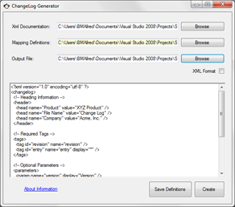

ChangeLog
 Source Code
Source CodeWith the increasing amount of different projects being developed in parrallel it was necessary to develop a system to track my changes. Typically, this was already being recorded within the source files uing normal comments where changes were made. However, I am not a fan of manual labor and created a Change log was turning in to more of a job than it needed to.
Voila! A solution was devised. Using a combination of Visual Studio XML comments, some custom tags, and this little application it is now easy to create and manage change logs.

Anyone familiar with XML comments for uses with products like Doxygen should adapt to this solution fairly quick. Essential, when revisions are made they are written in the source file. Upon each build we can set the development studio to dynamically create a document containing all of our XML comments. Then, based upon the mapping definitions file, the ChangeLog Generator can parse through this data and formulate a typical change log file.
If the need arises to bring multiple change logs in to one please see the File Merge application.